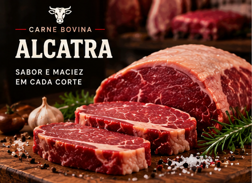
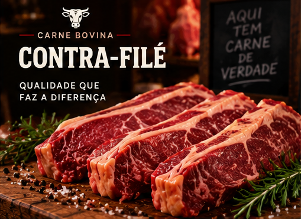
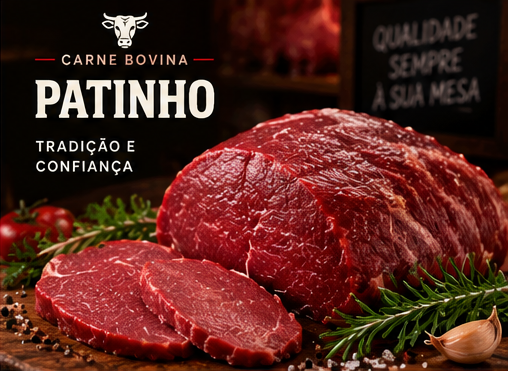
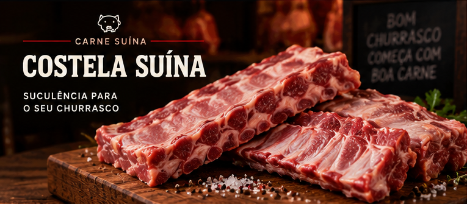
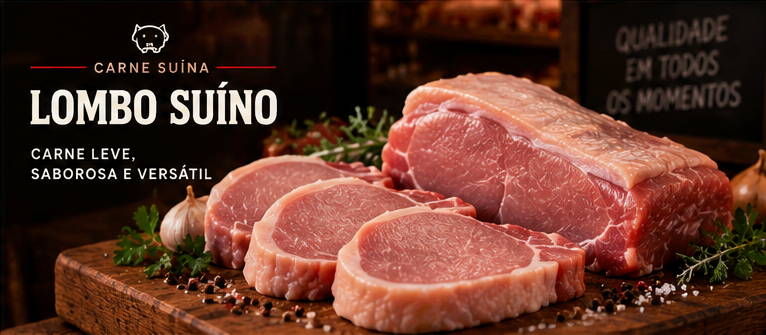
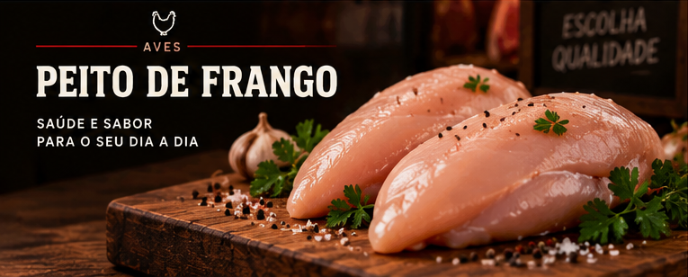
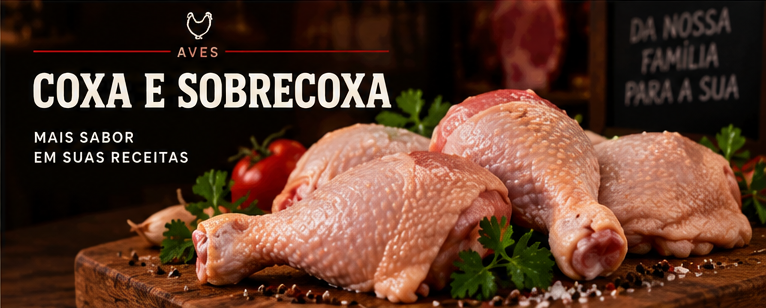

CARNE BOVINA
Alcatra
Corte macio para assar ou grelhar.
PreparoAssada ou grelhada
Cortes bovinos, suínos e aves. Veja as características e sugestões de preparo.
07 CORTES 03 CATEGORIAS

CARNE BOVINA
Corte macio para assar ou grelhar.
PreparoAssada ou grelhada

CARNE BOVINA
Corte com gordura lateral, indicado para bifes e churrasco.
PreparoNa churrasqueira ou na frigideira

CARNE BOVINA
Corte magro para bifes, cubos ou carne moída.
PreparoMoído, em bifes ou em cubos

CARNE SUÍNA
Corte com osso, indicado para forno ou churrasqueira.
PreparoNo forno ou na churrasqueira

CARNE SUÍNA
Corte com pouca gordura para assados ou medalhões.
PreparoAssado ou em medalhões

AVES
Corte versátil para grelhar, desfiar ou preparar em tiras.
PreparoGrelhado, desfiado ou em tiras

AVES
Cortes com osso para assar ou preparar ensopados.
PreparoAssada ou ensopada